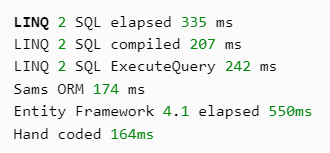
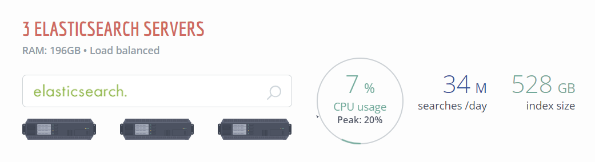

Stack Overflow:
100 Million Uniques / Month on 9 Web Servers
David Haney | hachyderm.io/@haney | June 21, 2023
David Haney
- Sr. Director of Eng at Stack Overflow by day
- Craft beer, movie, and gaming nerd by night
- Creator: codesession.io
- 8+ years @ Stack Overflow
- Joined Stack as Developer
LET'S GO BACK IN TIME!
First stop: 2008
StackOverflow.com Launches
- C#, .NET, MSSQL, jQuery, Subversion
- That's what founders knew
- Started with off-the-shelf tools:
- ASP.NET MVC
- LINQ to SQL
- MSSQL + SQL fulltext search
- Built-in output caching
Lessons Learned
- Start with what you know
2009-2011: SO Gets Popular!
- And starts chugging w/ more traffic
- How do you fix performance problems?
- MEASURE THEM!
- ...But if no .NET profiling tools exist yet...
- CREATE ONE FIRST!
Profiling Perf
- Shows you where it's slow
- Lets you make it fast
- Verifies your perf fixes
- If you're not profiling, you're guessing
Lessons Learned
- Start with what you know
- Measure performance (w/ existing tools)
What Did MiniProfiler Reveal?
- We wrote some slow methods
- .NET Framework had big flaws (in 2011)
<3 you Microsoft!
Fixing Our Slow
- All created objects cost memory; memory is finite
- Calculations cost CPU; CPU is finite
- Managed GCs are tricky
- Enter Caching, Optimization, and Pooling
Caching / Memoization
- Storing method output for future callers (thus skipping the expensive method after ~1st time)
- Trades CPU for memory
- Local or remote (start local)
- LIFO, FIFO, etc. algs used for eviction
- TERRIFIC for read-often write-rarely loads
Optimization
- GC: what is created must be later destroyed
- A common pitfall: string concatenation
- In .NET, strings are immutable (read-only) reference objects.
- So each
"string1" + "string2" creates a new object
- Solution:
StringBuilder
- Uses byte buffer under hood, strings are written as raw bytes
Pooling
- Creating the same object a lot? Pool it!
- Store
n copies of the object in a queue, push when done and pop when needed
- Reset / reinitialize object on
push
- Reusing objects ~= constant memory
- Object pool example (a bit dated)
Fixing Framework Slow
- LINQ to SQL very slow (in 2011)
- Entity Framework 4 was slow too
- Too much manual SQL DTO mapping code
- USE A BETTER .NET ORM!
- ...But if no better .NET ORM exists yet...
- CREATE ONE FIRST!
Prototype Dapper (Sam's ORM)
var cars = con.Query<Car>("SELECT * FROM cars").ToList();

Lessons Learned
- Start with what you know
- Measure performance (w/ existing tools)
- Fix / replace the slow (w/ existing tools)
More Traffic = More Logs
- Logging in SQL table, but hard to grok
- Tough to see trends, groups, counts
- Queries are hard: avg errors / min? hour? day?
- USE A LOG AGGREGATOR!
- ...But if no good log aggregator exists yet...
- CREATE ONE FIRST!
Lessons Learned
- Start with what you know
- Measure performance (w/ existing tools)
- Fix / replace the slow (w/ existing tools)
- Logs are a gold mine (if mined)
DBs Are Slow (But Needed)
- Tune database perpetually
- Use indexes and covered queries
- Avoid smells like everything
WITH (NOLOCK)
- Readonly replica reduces locks
- Measure your queries (Opserver can help)
Lessons Learned
- Start with what you know
- Measure performance (w/ existing tools)
- Fix / replace the slow (w/ existing tools)
- Logs are a gold mine (if mined)
- Measure & tune your database
Defer Complexity
- Our initial tools worked well for YEARS!
- As load caused tools to fail:
- ASP.NET MVC → .NET Core MVC
- LINQ to SQL → Dapper
- SQL fulltext search → Elasticsearch
- Built-in output caching → Redis
Lessons Learned
- Start with what you know
- Measure performance (w/ existing tools)
- Fix / replace the slow (w/ existing tools)
- Logs are a gold mine (if mined)
- Measure & tune your database
- Solve actual problems, not future ones
Fast Forward to 2014
- 54th most visited website in the world
- 110 Stack Exchange network sites
- 4 million users
- 8 million questions
- 40 million answers
- 560 million pageviews / month
- Just 25 servers
Lessons Learned
- Start with what you know
- Measure performance (w/ existing tools)
- Fix / replace the slow (w/ existing tools)
- Logs are a gold mine (if mined)
- Measure & tune your database
- Solve actual problems, not future ones
- Performance is a (cost-saving) feature
Stack Overflow Today (2022)
- 179 Stack Exchange network sites
- 1.3 billion monthly page views (network)
- 51.2 million unique SO visitors / month
- 22.8 / 33.7 million SO questions / answers
- ...AND STILL JUST 25 SERVERS
3 Elasticsearch Servers

LESSONS LEARNED RECAP
- Start with what you know
- Measure performance (w/ existing tools)
- Fix / replace the slow (w/ existing tools)
- Logs are a gold mine (if mined)
- Measure & tune your database
- Solve actual problems, not future ones
- Performance is a (cost-saving) feature